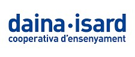
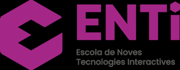

Aptitudes:
- Visual Studio.
- C++.
- Unity.
- Unreal Engine.
- HTML.
- Blender.
- Aseprite.
- Adobe Photoshop.
- MySQL.
Estudios:
- Estudios obligatorios cursados en la escuela Daina-Isard.
- Título de Bachillerato en la rama tecnológica, cursado en la escuela Daina-Isard.
- Cursando Ciclo Formativo de Grado Superior en Desarrollo de Aplicaciones Multiplataforma con perfil en Videojuegos y Ocio Digital (DAM–VIOD), en la institución ENTI (Escola de Noves Tecnologies Interactives).


Idiomas:
- Español - Competencia nativa.
- Catalán - Competencia nativa.
- Inglés - Competencia de Bachillerato.
Trabajos realizados:
Proyecto de 1r del CFGS de DAM–VOD en ENTI, nominado para los premios de la DemoDay de ENTI:
"REFRACTED: The Radiant Guardian of the Boundary".
Proyecto de 2n del CFGS de DAM–VOD en ENTI, nominado para los premios de la DemoDay de ENTI:
"Size Matters".
Proyecto de Game Jam de 2n del CFGS de DAM–VOD en ENTI en colaboración con
DeAPlaneta Entertainment y
Casa del Libro, con el premio a "Mención Especial del Jurado":
"Milo: Aventuras en el Espacio".